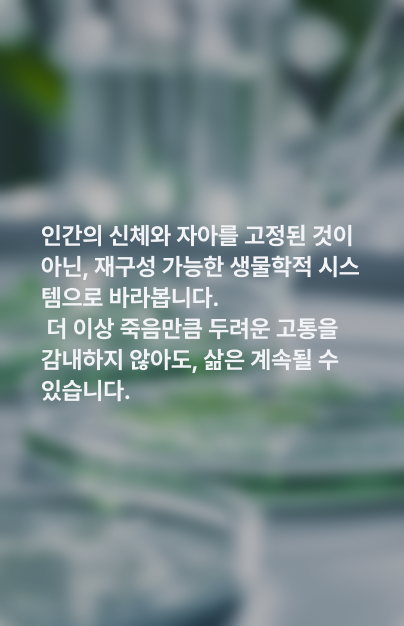
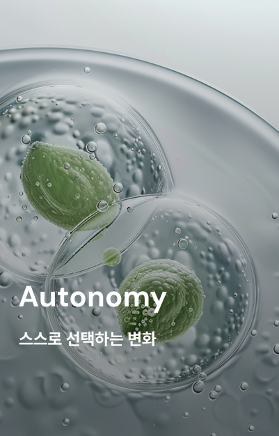
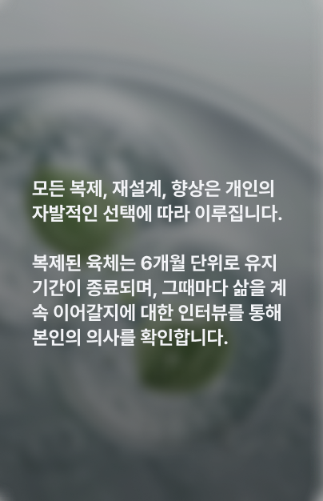

Subvion의 신념
윤리적 신념을 바탕으로 새로운 삶의 기회를 제공하는 혁신을 만들고자 합니다.





생물학적 복제 기술과 유전체 기반 자아 최적화 솔루션을 통해, 건강한 새로운 육체를 만들어냅니다. 불치병, 유전적 한계 등 어떠한 생명의 문제도 더 이상 죽음으로 이어지지 않고 새로운 삶을 얻을 수 있습니다.
Subvision의 시작은 2032년, 생명공학자 Dr. Elias Suber의 선택에서 비롯됐습니다. 시한부 판정을 받은 그는 죽음을 받아들이는 대신, 자아를 유전체와 신경 회로 데이터로 재구성해 새로운 육체에 담는 방법을 연구했습니다. 수많은 실험 끝에 그는 그 가능성을 현실로 만들었고, 이 철학은 ‘생물학적 기반(Sub) + 미래적 통찰(Vision)’이라는 브랜드명으로 이어졌습니다.그리고 그 기술의 첫 번째 사례는 바로 Dr. Elias Suber 본인입니다. 그는 현재까지 40년 넘게 같은 육체로 살아가고 있으며 Subvision은 이론이 아닌, 살아 있는 증거 위에 세워졌음을 알 수 있습니다.
윤리적 신념을 바탕으로 새로운 삶의 기회를 제공하는 혁신을 만들고자 합니다.
윤리적 신념을 바탕으로 새로운 삶의 기회를 제공하는 혁신을 만들고자 합니다
개개인의 유전체, 호르몬, 근육 반응,
피부 특성을 고해상도로 스캔 후 분석합니다.
스캔이 끝난 뒤, 언어패턴 분석을 위해
녹화실로 들어가 인터뷰를 진행합니다.
수집된 데이터를 바탕으로 프로토타입을 생성합니다.
일주일의 관찰기간을 거쳐 프로토타입 중
가장 이상적이고 안정적인 자아를 선택합니다.
설계된 프로토타입을 바탕으로 신체를
목적에 맞게 최적화합니다.
기존의 문제를 해결하고
완전히 새로운 삶의 방향을 제공합니다.
제작된 육체는 활성화되어 실험/연구에 들어갑니다.
이후 완료된 대상은 목적에 따라 종료/해제됩니다.